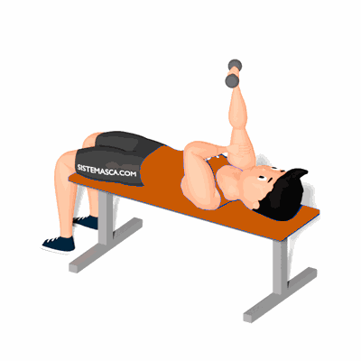

Tríceps Testa Unilateral com Halter

O exercício trabalha isoladamente a hipertrofia do tríceps braquial, que é realizado de forma unilateral para correção de desiquilíbrios de força entre os lados.
Ficha Técnica
Tipo: Musculação
Grupo Muscular: Tríceps
Aparelho: Nenhum
Músculos: Nenhum
Como realizar
- Deite em um banco e segure com uma das mãos o halter e mantenha em frente ao corpo;
- Coloque a mão oposto sobre o bíceps como apoio para o braço que está segurando o halter;
- Inicie a descida da carga dobrando os cotovelo sem que o mesmo abra para os lados;
- Desça a carga de uma maneira que os halter passe por trás da cabeça até sentir o tríceps alongar;
- Suba a carga até chegar próximo a completa extensão dos braços.
 RC STORE
RC STORE